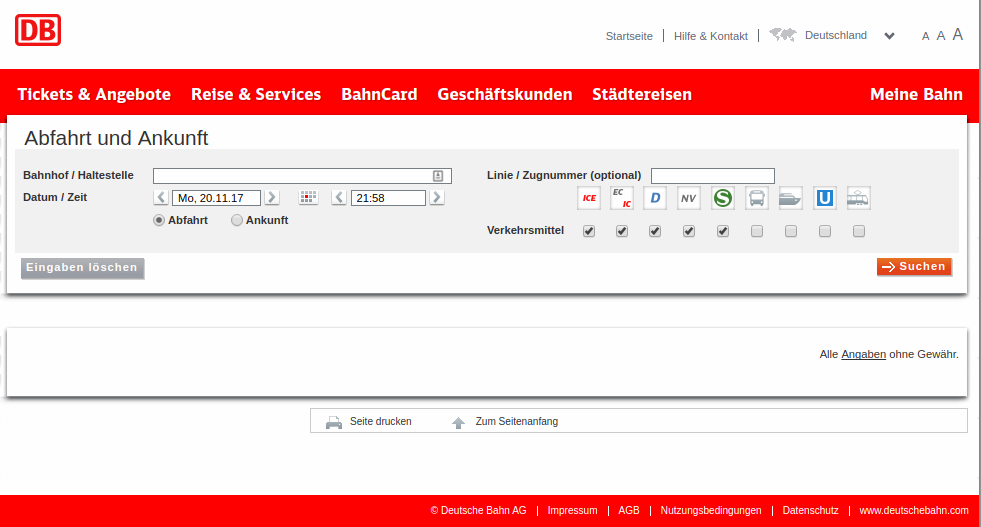
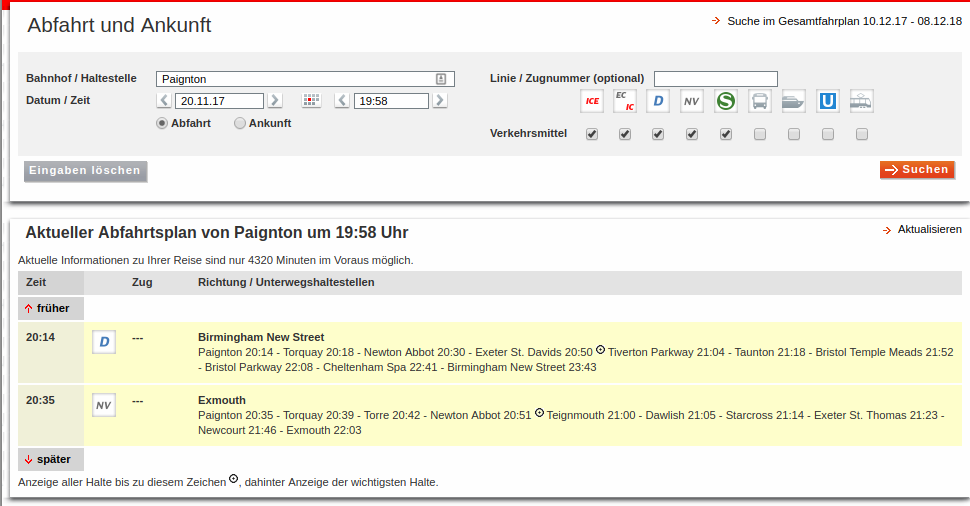
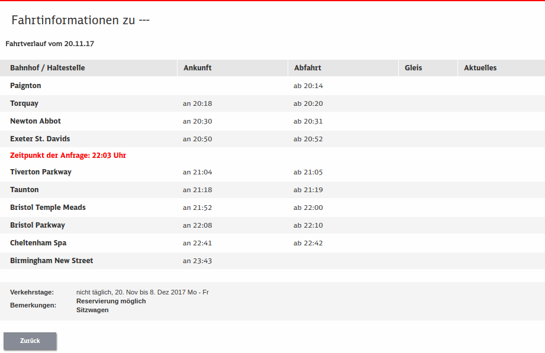

Chuff chuff: using rvest with web forms
Introduction
We are very accustomed to journey planners that help us navigate across the city, the country or the world. Google’s transit directions are an example: you enter a start and an end point, and it tells you which vehicles to get and where to transfer to another one. Nowadays, this is a commonplace. But back in 1989, the idea of “shortest path” was an idea in the minds of graph theorists, not a practical way to get from one place to another. I used to travel with paper schedules and plan my journeys using my network knowledge to guess at the best routes.
1989 was the year that HAFAS, a German company developed algorithms to make journey planning on a large scale feasible, and these became the basis of timetable information systems for the German and Swiss federal railways. In 1995, this “went Internet” with the launch of a publicly-accessible web-based journey-planning system. As I recall, you entered your query into a web form, the processing happened off-line, and in due course you were emailed an itinerary. The UK rail system was included, and since I grew up there, this was a natural thing for me to try out.
Soon, of course, the processing happened in real time, and entering something into the form returned a web page with results.
The same system, as far as I can tell, powers the German rail planner today. This covers not just Germany, but much of Europe including the UK.
The interface
Here is where this discussion starts:

This is not the journey planner itself, but gives a station departure board for the next hour. That is what I wanted to play with. Required input is a place such as Paignton that goes into the Bahnhof/Haltestelle box (you can get the form in English too, but I like the German one better). The date and time default to the current date and time (in local time to the station whose departures you want to see), but you can change them if you wish.

I entered Paignton as the place to search for, and accepted the then-current date and time. This shows two trains departing Paignton in the hour after 19:58, one to Birmingham New Street, departing at 20:14 (in the left column) and one to Exmouth at 20:35. This is like the Departure Board in Google Maps (if you click on a transit terminal), but more interesting.
The column under Unterwegshaltestellen (“under-way-stopping-places”) shows at least some of the places the train stops on the way to its final destination. The column Zug (“train”) shows the type of train (D seems to be a long-distance train and NV a local one) and would also display the train numbers in place of the three dashes, if the UK had joined the rest of the world and used numbers to distinguish each of its trains. Nonetheless, clicking on one of the things in the Zug column, say for example for the train to Birmingham, gives this:

These are all the stops that this train makes, rather than the possibly-abbreviated list on the previous display. This train starts from Paignton (it is the end of the line) and stops at the places shown, with scheduled arrival times (“an”) and departure times (“ab”) for each. The terminal stations have only a departure or an arrival. There is an extra line, the one in red, that indicates when the query was made. I guess this is taken to be 22:03 CET which is 21:03 in the UK, which is why it appears where it does on the table. For trains in Germany, the last two columns are also used: Gleis is the track/platform at which the train stopped or will stop, and Aktuelles is the observed or predicted actual time at which the train appeared.
I want, given a station and a time and date, to produce tables like this last one for all the trains that stop at my chosen station in the given hour.
Doing that automatically
Submitting the form
I figured that rvest could probably handle forms, but I didn’t know how. The strategy turns out to be:
- Grab the (empty) form
- Fill in the values you want
- Submit the form
which seems ludicrously simple when you say it like that. Here it is in code for a query like the one above. (It’s the same trains on a different day because I wanted to catch and deal with a problem.)
library(tidyverse)## ── Attaching packages ─────────────────────────────────────────────────────────────────────────── tidyverse 1.2.1 ──## ✔ ggplot2 2.2.1.9000 ✔ purrr 0.2.4
## ✔ tibble 1.4.2 ✔ dplyr 0.7.4
## ✔ tidyr 0.8.0 ✔ stringr 1.3.0
## ✔ readr 1.1.1 ✔ forcats 0.3.0## ── Conflicts ────────────────────────────────────────────────────────────────────────────── tidyverse_conflicts() ──
## ✖ dplyr::filter() masks stats::filter()
## ✖ dplyr::lag() masks stats::lag() library(rvest)## Loading required package: xml2##
## Attaching package: 'rvest'## The following object is masked from 'package:purrr':
##
## pluck## The following object is masked from 'package:readr':
##
## guess_encoding form_url = "http://reiseauskunft.bahn.de/bin/bhftafel.exe/dn?ld=15082&rt=1&rtMode=&"
html = html_session(form_url)
form_blank = html_form(read_html(form_url))
form_filled = form_blank[[2]] %>%
set_values(
"input" = "Paignton",
"date" = "22.11.17",
"time" = "19:58")
submitted = submit_form(html,form_filled)## Submitting with 'start' submitted## <session> https://reiseauskunft.bahn.de/bin/bhftafel.exe/dn?ld=15082&country=DEU&protocol=https:&rt=1&rtMode=&
## Status: 200
## Type: text/html; charset=ISO-8859-1
## Size: 23635We start with the URL for the form, then create a session starting there. Then we grab the form (this code looks a little verbose to me, but it works). This actually returns a list of two forms; inspecting this reveals that we need the second one. I took a look at the form code using Inspect on Chrome, and found that the fields I want to use are called input, date, and time; this is how I set their values. We save this in form_filled and submit it to the session as shown. If “submitting with ‘start’” appears, it’s probably worked.
The final value submitted is the HTML returned by the form, which we can query in different ways. Saving it means that I don’t have to submit the query again.
Understanding the output
From here on, we have the HTML output that we want to process, so we only need standard rvest tools. The first thing to check is that we have the right departure times, which we can get at like this:
(this doesn’t seem to work any more)
submitted %>% html_nodes("td") -> tds
tds## {xml_nodeset (20)}
## [1] <td> </td>
## [2] <td><label for="prod_0"><img src="https://www.img-bahn.de/s3/prod/v ...
## [3] <td><label for="prod_1"><img src="https://www.img-bahn.de/s3/prod/v ...
## [4] <td><label for="prod_2"><img src="https://www.img-bahn.de/s3/prod/v ...
## [5] <td><label for="prod_3"><img src="https://www.img-bahn.de/s3/prod/v ...
## [6] <td><label for="prod_4"><img src="https://www.img-bahn.de/s3/prod/v ...
## [7] <td><label for="prod_5"><img src="https://www.img-bahn.de/s3/prod/v ...
## [8] <td><label for="prod_6"><img src="https://www.img-bahn.de/s3/prod/v ...
## [9] <td><label for="prod_7"><img src="https://www.img-bahn.de/s3/prod/v ...
## [10] <td><label for="prod_8"><img src="https://www.img-bahn.de/s3/prod/v ...
## [11] <td>\n<label class="front" for="prod_0">Verkehrsmittel</label>\n</td>
## [12] <td>\n<input id="prod_0" class="checkbox " type="checkbox" name="GU ...
## [13] <td>\n<input id="prod_1" class="checkbox " type="checkbox" name="GU ...
## [14] <td>\n<input id="prod_2" class="checkbox " type="checkbox" name="GU ...
## [15] <td>\n<input id="prod_3" class="checkbox " type="checkbox" name="GU ...
## [16] <td>\n<input id="prod_4" class="checkbox " type="checkbox" name="GU ...
## [17] <td>\n<input id="prod_5" class="checkbox " type="checkbox" name="GU ...
## [18] <td>\n<input id="prod_6" class="checkbox " type="checkbox" name="GU ...
## [19] <td>\n<input id="prod_7" class="checkbox " type="checkbox" name="GU ...
## [20] <td>\n<input id="prod_8" class="checkbox " type="checkbox" name="GU ... tds %>% html_attr('class') -> classes
classes## [1] NA NA NA NA NA NA NA NA NA NA NA NA NA NA NA NA NA NA NA NA tds %>% html_text() -> texts
texts ## [1] " " "" ""
## [4] "" "" ""
## [7] "" "" ""
## [10] "" "\nVerkehrsmittel\n" "\n"
## [13] "\n" "\n" "\n"
## [16] "\n" "\n" "\n"
## [19] "\n" "\n" tibble(classes,texts) %>% filter(classes=="time")## # A tibble: 0 x 2
## # ... with 2 variables: classes <chr>, texts <chr>Since the information we want is in table cells, we pull out all the td elements from the returned HTML, their text and their class attributes. I discovered that the departure times have a class attribute of time, so I assemble the classes and times into a tibble and display only those rows that have the right class attribute. We see the two departure times, along with the clickable links saying “earlier” or “later” that in real life you can use to navigate to the previous or next hour.
Anyway, so far so good. Can we get all the stops of the trains to Birmingham (the first one) and to Exmouth (the second one)?
The things I want are hyperlinks which I then have to follow, so the first thing is to get the hyperlinks. This can be done by searching the td elements for contained a hrefs:
submitted %>% html_nodes("td") %>%
html_nodes("a") %>% html_attr("href") -> hrefs
hrefs## character(0)There should be only two, but there are a lot more than that. I want trains, so the things I want have traininfo in them, and it’ll be much more convenient if I can grab the ones that are actual URLs, rather than being relative to some root that I’d have to figure out. Some stringr ideas help here. str_detect returns TRUE or FALSE according to whether the pattern matches or not:
hrefs %>% str_detect("^http:") -> https
hrefs %>% str_detect("traininfo") -> trains
v = hrefs[trains & https]
v## character(0)Out of the hrefs, I determine which ones start with http: and which ones contain traininfo in them somewhere. Then I use some very base R work to pull out the ones I want. Or I guess I could have made a tibble:
#tibble(hrefs,https,trains) %>%
# filter(trains,https) %>% pull(hrefs)Getting arrivals and departures
Now we go to each of those URLs and search for the table containing the arrival and departure times. html_table returns a list of tables, so we’d better get the right one. First train first:
# html=read_html(v[1])
# html %>% html_table() A list of two tables, of which we want the first, and of that, only the first three columns (not the ones with the platform number or actual times):
# html %>% html_table() %>% .[[1]] %>%
# select(1:3)This is ugly because of that “Zeitpunkt der Anfrage” stuff, which was the time of the query, and has nothing to do with the train at all. Let’s get rid of that. It appears in every column, so we can search in any column to find it. Let’s search for things in the Abfahrt column that start with Zeitpunkt:
# html %>% html_table() %>% .[[1]] %>%
# select(1:3) %>%
# filter(!str_detect(Abfahrt,"^Zeitpunkt"))And now we are in business. I would take one more step and get rid of those words “an” and “ab” from the times, since we already know what they stand for. The format is very predictable: there are 8 characters in each time, of which we want the 4th through 8th. So str_sub from stringr will do it. We are going to the sub-stringing on two columns, both of whose names start with A, so we can do it in one shot, thus:
#extract_time=function(x) {
# str_sub(x,4,8)
#}
# html %>% html_table() %>% .[[1]] %>%
# select(1:3) %>%
# filter(!str_detect(Abfahrt,"^Zeitpunkt")) %>%
# mutate_at(vars(starts_with("A")),funs(extract_time))There were two trains, the URLs for which were stored in v, so we can get both trains at once by defining the above into a function:
#train_times=function(url) {
# html=read_html(url)
# html %>% html_table() %>% .[[1]] %>%
# select(1:3) %>%
# filter(!str_detect(Abfahrt,"^Zeitpunkt")) %>%
# mutate_at(vars(starts_with("A")),funs(extract_time))
#}and then using map to get them both (or all) at once:
#map(v,train_times)The second train is definitely an all-stations local.